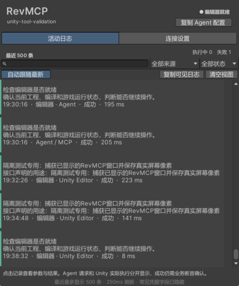
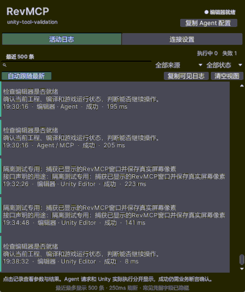

〇结论与范围
本轮完成调用链与窗口热点修复，新增 8 个受控动作；没有声称参考工具全部功能等价。
调用链改前/改后样本连接用户原 RevGame 编辑器，只执行 editor.status，没有修改其场景/Play。Unity 编译、制作操作与 Test Runner 全部在本轮隔离工程 .codex/work/unity-tool-validation，不更新或回滚用户工程的框架快照、包源或设置。
一性能对照
同层、同动作比较。冷调用与长尾保留，不筛掉不好看的样本。
| Server.call → 实际 Unity，12 次 | 改前 | 改后 | 变化 |
|---|---|---|---|
| mean | 1464.95ms | 354.29ms | 耗时下降 75.8% |
| median | 1240.84ms | 190.33ms | 耗时下降 84.7% |
| 成功调用 | 12/12 | 12/12 | 同一只读契约 |
底层 RevClient 在同环境的另 12 次基线 mean 200.08ms / median 155.27ms，说明完整 MCP 层曾额外消耗明显。不能拿这个底层数字替代 MCP 改前数字。
| 样本 | 改前 ms | 改后 ms |
|---|---|---|
| 1 | 1314.21 | 1510.82 |
| 2 | 1079.53 | 134.67 |
| 3 | 2337.07 | 196.64 |
| 4 | 803.75 | 151.23 |
| 5 | 3058.59 | 237.59 |
| 6 | 1701.03 | 181.59 |
| 7 | 1167.47 | 168.44 |
| 8 | 1722.26 | 217.19 |
| 9 | 996.34 | 184.01 |
| 10 | 1084.41 | 276.09 |
| 11 | 853.30 | 859.86 |
| 12 | 1461.49 | 133.28 |
真实 MCP stdio 与窗口开关
| 环境 / 20 次 editor.status | mean | median | 冷调用 |
|---|---|---|---|
| 用户 RevGame 编辑器，优化后 | 475.59ms | 278.17ms | 2833.15ms |
| 隔离图形 Unity，窗口关闭 | 165.04ms | 117.67ms | 365.53ms |
| 同隔离 Unity，窗口开启，500条记录 | 125.33ms | 110.81ms | 228.57ms |
最后两轮各 20/20 成功，窗口开启没有观察到调用延迟恶化。关闭/开启按顺序执行，会受热态和后台负载影响，不把更低数字说成“开窗口使编辑器更快”。P95 nearest-rank：关闭 365.53ms，开启 210.61ms。
改前 stdio 未测，因此只有 Server.call 同层对照能算下降百分比。独立脚本 Revolution.RevMCP/tests/benchmark_unity.py 保存全部样本。减少无关发现、证据工作与目录体积，不代表 Unity tick 或构建本体变成零耗时。
二活动窗口
保留中文目的、GM、详情与筛选；读取/显示成本有边界。
合成日志明确标为 validation.synthetic-log 与“合成日志压力夹具”，共产生 600 个开始/结束事件对，只测试窗口容量与积压处理，不代表600个游戏业务通过。窗口最后显示最近500条，标题/用途/原动作和搜索文本缓存，可变行高缓存，二分定位视口，屏幕外不创建控件。
Test Runner 中活动测试 26 项通过：完整/半行 UTF-8、结束不倒退、截断轮换、过长坏行、全局预算与轮转、最新500条、空闲不读字节、不失效缓存、GM识别、筛选缓存、可变行高视口边界和写入失败不改业务结果。
真实窗口截图

10帧实际刷新

截图来自已显示且置前的隔离 RevMCP 窗口，GIF 由10帧实际截图合成。早期截图曾被 IDE 遮挡，已检查并排除；它们不作为窗口证据。连拍与图像编码不计入上表的延迟对照样本。
三新能力与回归
发现、参数、执行、回读与清理各自验收，不只确认命令名存在。
| 项目 | 结果 / 范围 |
|---|---|
| RevCLI Python | 47/47：参数类型、未知字段、向量、材质属性、关键字、路径、pipeline、心跳短重读、域代际稳定屏障、取消前不建工单与准备中取消不发布inbox。 |
| RevMCP Python | 36/36：真实外部进程/stdio握手与取消、计划断言/finally、能力缓存失效、无变更重放、紧凑目录/分页、Runtime轮询、凭据与日志脱敏、证据隔离。 |
| Unity 编译 | 隔离2022.3.15f1c1，compiling=false、failed=false、messages空；新domainId心跳及findable返回字段验证新程序集实际生效。 |
| Unity Test Runner | 图形Unity101/101；收尾后独立Test Runner102/102，诊断补充后最新106/106、失败0、跳过0，包含活动31项、工作区53项、其它JSON/资源/生成路径22项。最终批处理测试仅验编译与规则，不用于窗口渲染性能成绩。 |
| 实时注册 | 8个新增动作均在真实Unity目录；隔离工程126个Editor动作（排除截图测试夹具），CLI说明136项。数量差异包括项目可选工具及客户端动作，不宣称自动覆盖所有插件。 |
| 真实MCP计划 | 紧凑tools/list仅3个稳定入口；10步操作+2步finally完成，动态ID来自创建结果，全部读回断言通过。 |
真实 stdio 计划覆盖
- shader.list 查出可解析 Shader 并断言 findable。
- 创建本轮临时资产目录，创建真实 Cube，返回对象ID。
- transform.set 设置世界坐标 [1,2,3]、Euler及局部缩放，transform.get 读回断言。
- material.create 以刚查出的 Shader 创建材质，material.set 修改 renderQueue=3210，inspect 读回3210。
- material.clone 克隆到新位置，inspect 确认队列保留。
- finally 删除本轮对象与临时资产目录，成功不等于“清理请求已接受”：事后查询确认无残留。
新建/克隆磁盘资产不承诺 Undo；变换和材质修改的 Undo、Prefab override、GUID 不变、错误参数不先部分写入在真实工作区测试中验证。所有计划发生在隔离工程，不在用户游戏工程试删试建。
四首次失败与修正
保留失败和原因，不只保留最后好看的成绩。
新测试把根 Prefab 实例位置当成非默认 override，用 HasPrefabInstanceAnyOverrides(instance,false) 期待true，实际false。根Transform位置是Unity默认override，这是测试契约错误，不是通过改期望状态修玩法。修正为包含默认override并检查实际属性记录，仍保留Undo回零断言；最终101/101通过。
Shader目录第一个是 Hidden/2D Handles Dotted Lines，编辑器加载可见但 Shader.Find 无法解析，material.create明确拒绝，2步finally仍清理成功。修复目录表达：新增 findable，指明可解析与仅可见不同，不放宽到编辑器私有资产；补真实目录测试，并从实际结果选择findable=true的名称。后续10步+2清理全部通过。
验证脚本曾等待session改变而超时。实际SessionState为恢复长工单刻意跨重载保留。现在单独发布domainId，能力缓存与稳定屏障绑定域代际；Session继续支持原工单恢复，协议1兼容，旧桥字段可缺省。瞬时心跳原子替换只重读几毫秒，不重发业务。
框架原工程没有可用版本文件并停在版本对话框，改用本轮隔离工程，不改用户版本。隔离测试最初额外启用Test Framework自身testables导致相关包缺失，移除夹具中无关选项后继续。新动作失败清理使隔离空场景dirty，Test Runner正确拒绝未保存场景；确认临时对象已无残留，仅保存隔离空场景后复测。未绕过未保存内容保护。
在线快速路径原先可能先发布已取消动作，再检测取消；现在入口和发布前检查，取消不会创建工单或发布inbox，准备期间取消仍保留cancel证据。清空视图后，不在最近64流的游标原先被丢弃，旧流再次活跃会带回历史；现在只清理真实已删除文件的游标，65流真实文件测试保证只看到新增事件。筛选隐藏选中项时同时清空详情选择。CLI最终47/47、独立Unity最终102/102验证这些边界，失败不重放业务。
核对磁盘确认窗口与102项成绩已落盘，但editor.activity仍每次新建Reader、只Poll一次，128行首批被当完整总数，重查也从首批重读。现在使用独立持久游标（不共享窗口清空视图），单次最多8批、批间20ms软预算；新增pending/totalIsFinal/invalidLines/polls/scope，明确64流、新流尾部256KiB、最多500条，半行/坏行不计total，分页不保证跨调用快照。新增4个真实文件诊断用例：16流1600事件必报积压且跨调用最终保留最新500条；筛选/分页与summary对齐；半行补完整及坏行；目录切换/删除不复用旧结果。
补充独立Unity 2022.3.15f1c1 Test Runner最终106/106，失败0、跳过0；Python重跑CLI47/47、MCP36/36。XML与日志在.codex/work/mcp-perf-after/diagnostics-106.xml及同名前缀log。此次仅编译/诊断规则验证，未复测图形、窗口CPU/GC或调用加速，沿用上方此前测量并注明时点，不生成替代截图或GIF。测试夹具为.codex/work/unity-diagnostics-check，收尾删除。
五参考、边界与清理
参考设计，不复制许可不明的整包；只交付本轮验证过的范围。
参考目录 CLI工具/unity-true-cli 的来源记录为 Haki-sheep/UnityCLI2Skill、dev/0everey、提交 b028e8c7fcfcf9b2d36aab203b9653f476c3f5ef。其Skill静态索引宣称277个名称/310处实现、包括Cinemachine与可选UI/Input/渲染扩展；这不是本轮逐项调用或验证的数字。Pipeline LICENSE适用Unity Terms of Service，不是MIT式自由复制许可。本轮只借鉴按任务发现、批量/等待/工单恢复、类型化操作与Skill工作流，独立实现，不导入其二进制或源码。
保留原有场景、组件、资产、Importer、Prefab、设置、Console、测试、构建、UGUI、GM、AB/导表与Player链；新增三维变换、原始体和材质/Shader。未新增任意C#或shell执行、Terrain/Tilemap、动画/Timeline制作、Cinemachine/Input System完整专用操作、Android设备控制；不能宣称与参考工具全部能力等价。
新增 Skills/revolution-unity-editor/，含操作配方、提速/诊断、真实入口发现、检查后修改、读回断言与清理。现有revolution-ai-automation与Skills索引同步；玩法继续按framework技能，业务测试继续按真实本局接口。
本轮原始JSON、工单、全部失败和计时记录在被忽略的 .codex/work/mcp-perf-after/；公开目录仅HTML与必要PNG/GIF。临时测试工程和仅测试截图入口收尾后删除，未加入框架源码。用户原RevGame编辑器、场景/Play保留。未执行Git提交或推送。